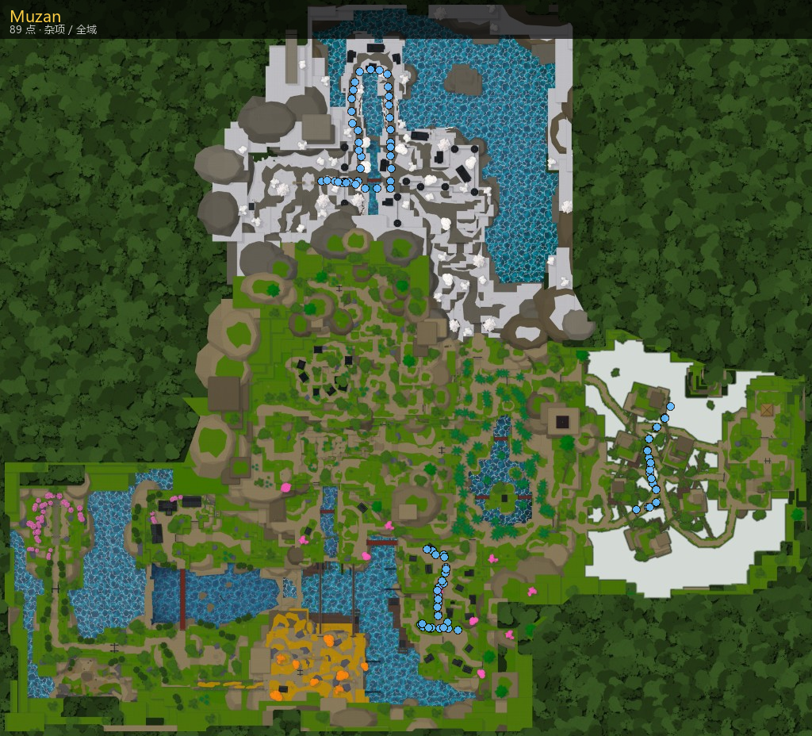

主页 / NPC / Muzan
Muzan
Muzan
成鬼 / 游走
- 区域：杂项 / 全域 (Misc)
- 作用：成鬼 / 游走
- 成鬼门槛：声望必须 ≤ -40（
EligibleReputation）。未达标无法接成鬼 / 领琵琶铃。详见 阵营 · 声望。 - 夜间在主世界游走路线上遇见无惨，领取 琵琶铃 Biwa Bell；使用铃铛进入巢穴（进门另需声望 < -20；入场声望 +5）。
- 巢穴内完成 Muzan Quest（彼岸花 → 医生 → 安全区），详 邪恶艺术 · 成鬼。
- 耳语阈值（Whispers）：声望 −10 / −20 / −30 / −40 逐步加深；至 −40 提示 “Find me at nightfall.”
地点
无惨在主世界游走，配置刷新点 89 个（迷雾港 / 隐雾路 / 冰纱谷等路径）。下图标出全部可遇点位。

巢穴（Sunless / Muzan's Lair）不在大地图范围内，故不绘制点位图；持琵琶铃夜访后由铃铛传送进入。
坐标一览（89）
功能与用处
成鬼流程摘要
- 用猎杀平民 / 鬼杀任务等方式把声望压到 ≤ -40。
- 夜里在主世界游走点遇见无惨，领取 琵琶铃。
- 使用铃铛进巢穴（进门声望 < -20，入场 +5 声望）。
- 完成 Muzan Quest：采彼岸花 ×9 → 交 Dr. Higoshima → 安全区放置。
- 成鬼后可学邪恶艺术 / 魔球，见 邪恶艺术。
巢穴不在 Ouwland 大地图内，本页不提供巢穴点位图。
对话摘录
Shed that fragile, dying shell and become
Every kill. Every cruelty.
You already carry my gift.
You were never meant for their world of and hollow justice.
Use this to travel to my lair.
› Take the bell
› Not yet
You bear my blood already.
› Give me a mission